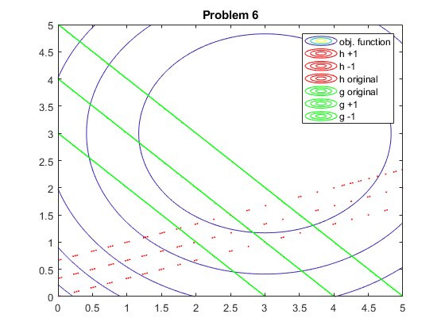

Contents
Problem 6a
clc
clf
clear
[x1,x2] = meshgrid(-10:0.01:10,-10:0.01:10 );
f = (x1-3).^2 + (x2-3).^2;
h = x1 - 3*x2 + 1 == 0;
h1 = x1 - 3*x2 + 1 == 1;
h2 = x1 - 3*x2 + 1 == -1;
g = x1 + x2 -4 <= 0;
g1 = x1 + x2 -4 <= 1;
g2 = x1 + x2 -4 <= -1;
contour(x1,x2,f,100)
hold on
contour(x1, x2,h1, '-r')
contour(x1, x2,h2, '-r')
contour(x1, x2,h, '-r')
contour(x1, x2,g,'-g')
contour(x1, x2,g1,'-g')
contour(x1, x2,g2,'-g')
axis([0 5 0 5]);
title('Problem 6')
legend('obj. function', 'h +1', 'h -1', 'h original', 'g original', 'g +1', 'g -1')

problem 7
clc
objFun =@(x) 100*(x(1)-x(2))^2 + (1-x(1))^2;
x0 = [0 0];
A = [];
b = [];
Aeq = [];
beq = [];
LB = [-2.048 -2.048];
UB = [2.048 2.048];
nonlcon = [];
[x, FunValue, ExitFlag] = fmincon(objFun, x0, A,b,Aeq,beq,LB,UB,'nonlcon')
Local minimum found that satisfies the constraints.
Optimization completed because the objective function is non-decreasing in
feasible directions, to within the value of the optimality tolerance,
and constraints are satisfied to within the value of the constraint tolerance.
x =
1.0000 1.0000
FunValue =
2.3002e-12
ExitFlag =
1
problem 8
clc
objFun =@(x) 2*x(1)^3 + 15*x(2)^2 - 8*x(1)*x(2) - 4*x(1);
x0 = [0 0];
A = [];
b = [];
Aeq = [];
beq = [];
LB = [-4 -8];
UB = [4 8];
nonlcon = [];
[x, FunValue, ExitFlag] = fmincon(objFun, x0, A,b,Aeq,beq,LB,UB,'nonlcon')
Local minimum found that satisfies the constraints.
Optimization completed because the objective function is non-decreasing in
feasible directions, to within the value of the optimality tolerance,
and constraints are satisfied to within the value of the constraint tolerance.
x =
1.0134 0.2702
FunValue =
-3.0676
ExitFlag =
1
clc
[x1,x2] = meshgrid(4.5:0.01:4.5,-8.5:0.01:8.5 );
fun = 2*x1.^3 + 15*x2.^2 - 8*x1.*x2 - 4*x1;